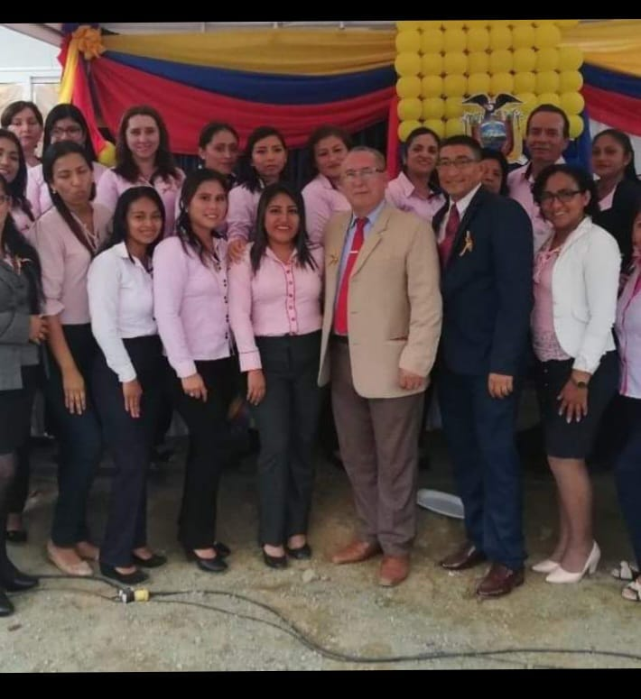
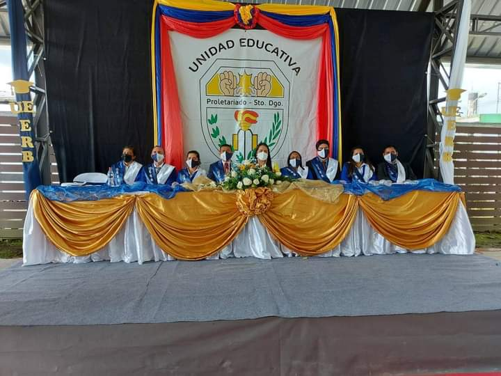

RESEÑA
Sintesis historica de Unidad Educativa ¨Eladio Roldos Barreiro¨ Nuestra institución inicia por el año de 1985 como escuela particular sin nombre del ex comité de vivienda ¨El Proletariado¨ en el año de 1988 la dirección provincia de Pichincha nombra a un maestro Fiscal, pasando a ser escuela fiscal sin nombre. El 24 de septiembre de 1989 se obtiene el acuerdo de creación con el nombre de ¨ELADIO ROLDOS BARREIRO¨. Nombre tomado por el MEC en honor a un hacendado filántropo de la provincia de los Ríos. La institución no contaba con local propio, funcionaba en la casa comunal, en forma precaria, dada estas condiciones, se gestiona la donación de una área paea su construcción.Luego de una serie de acontecimientos.Loa habitantes de la localidad logran formar la cooperativa de vivienda ¨El Proletariado¨. Quienes donan dos hectáreas de terreno en el lugar donde hoy laboramos. La infraestructura se fué completando poco a poco, gracias a la colaboración de los padres de familia, la comunidad, el municipio, el CPP, el FISE.
Se construyeron poco a poco 18 aulas, 10 bacterias sanitarias, canchas de uso múltiple, un bar acondicionado, local para la dirección.Pero es poco por cuanto en la comunidad existe gran cantidad de estudiantes.La escuela se inició con el maestro Víctor Hugo Paz, luego llegaron maestros como: Luis Loachamín, Tarquino Ruíz, Edison Martínez, Leonel Cepeda, Angelita Shuguili, Rodolfo Macías, Eduardo Balseca, Eduardo Delgado, Blanca Hurtado, Coralia Manzano, Abel Pachecho, Antonio Orosco, Carlos Rosero, Jimmy Beltrán, Tania Tandazo, Liliana Vásquez, Dora Ramirez, Deisy Urgiles, Grace Perugachi, Guadalupe Aguinaga, Olga Mora, Luz Noboa, Ines Vilaña y la señora Ana Rivas auxiliar de servicio entre otros, quienes aportaron y aportan con sus conocimientos para una educación de calidad y calidez en la comunidad. Nuestra institución desde el año 2017 cuenta con Educación Inicial, Básica y Bachillerato con una matricula que sobrepasa a los 1000 alumnos por jornada. Cabe indicar que para el año lectivo 2017-2018 el MEC construyó aulas prefabricadas donde se integró a los maestros, estudiantes y padres de familia de la cooperativa Nueva Provincia y sus alrrededores. Actualmente tenemos la denominación de UNIDAD EDUCATIVA SIGLO XXI ¨ELADIO ROLDOS BARREIRO¨. Con un personal docente de 75 maestros de los cuales la mayoría contamos con nombramiento. La unidad educativa ¨ELADIO ROLDOS BARREIRO¨ se encuentra en la cooperativa del Proletariado Km 5 1/2 vía Quevedo a margen derecho, Avenida Edmundo Andrade, junto a la casa comunal de la Cooperativa. En los actuales momentos la unidad educativa ¨Eladio Roldos Barreiro¨ es género mixto, ofreciendo una formación integral, con sostenimiento del fisco la institución se desarrolla en un ambiente: democrático, crítico. Está regido por la contitución política del Ecuador, La Ley de la Educación y Cultural, y su Reglamento General, El Código de Convivenvia y los Reglamentos expedidos por el ministerio de Educación, Resoluciones y Acuerdos de sus Organismos y Autoridades. Tiene su domicilio en la Provincia de Santo Domingo de los Tsáchilas, cantón Santo Domingo, Parroquia Abraham Calazacón, cooperativa el Proletariado.
